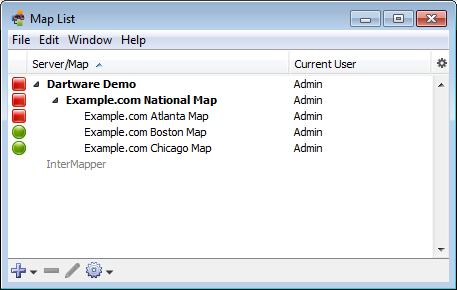
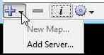
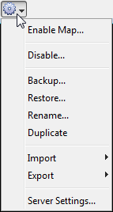

Use the Map List window as the primary interface to InterMapper.
The menu items available in the File menu differ slightly between InterMapper and InterMapper RemoteAccess. For more information, see the File Menu reference.
Use the Map List window to view a list of maps. If you have InterMapper RemoteAccess, you can also view a list of other available InterMapper servers, to log into one or more servers, and to view a list of maps currently running on each server.

The Map List Window showing the example maps. Position the mouse
cursor over a map in the list to view its DNS Name and/or IP address,
and the port on which it's listening for InterMapper RemoteAccess
connections.
Use the quick menus at the bottom of the map list window to access frequently used functions.


You can arrange your maps into folders as shown above, using the Server Configuration>Enabled Maps pane of the Server Settings window. For more information, see Enabled Maps.
From the Map List window, you can view a list of all devices on a particular server.
To view a global device list: